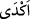
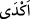
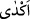

veya talep edileni tam olarak vermeyen kimse” mânâsında kullanılmıştır.
Kâmûs’ta () fiili; “cimri oldu”, “hayrı az oldu” yahut “bağışını az yaptı”
mânâlarında zikrolunmuştur.
Tâcü’l-Mesâdır’da ise () fiilinin “az olanı parçalarına ayırdı” mânâsında olduğu
beyân edilmektedir.
Rivâyete göre bu âyet Velid b. Muğire hakkında nâzil olmuştur. O, Rasûlullah (s.a.)’a
tâbi olacaktı. Hz. Peygamber (s.a.)’in ardından gider, meclisinde onun kelâmını
dinlerdi. Nebi (s.a.) de onun Müslüman olmasını arzu ediyordu. Sonra müşriklerden bir
şahıs kendisini ayıplayıp azarlayarak: “Atalarının dinini terk edip onların yolundan
ayrılıyor musun?” deyince, o: “Allah’ın azabından korkuyorum” diye karşılık vermiş.
Bunun üzerine o adam onun âhiret hakkında korktuğu azabı üzerine alacağını söylemiş
ve bir takım malları kendisine vermesini de şart koşmuş. Bunun üzerine Velid b.
Muğire, Rasûlullah’a tâbi olmaktan geri durup onun vaaz ve sohbetlerine sırt çevirmiş,
o kimseye de istediği malların bir kısmını vermiş, geri kalan kısmını vermeyerek
cimrilik göstermiştir. Âyetteki zemm, malı vermeme sebebine yâni cimriliğe âiddir.
Ancak, bahsi geçen kişinin Hz. Peygamber (s.a.)’e yüz çevirmesi zemmedilirken âhiret
azâbını üstlenenin de âyetteki bu zemme dâhil edilmediği düşünülmesin.
Kâşifî şöyle der: () yâni kalanı geri bıraktı, elinde tuttu. Cehalet ve cimriliği bir
araya getirdi.
Fakir (Bursevî) der ki: Görünen odur ki, bu âyetin nüzûl sebebi, -kanâatimce- mezkür
kimsenin İslam’a sırt çevirip, kıyâmet gününde bir başkasının kendi azabını yüklenecek
olmasına itikad etmesidir. Nitekim bir sonraki âyet (en-Necm 53/35) buna delâlet
etmektedir. “Azıcık verdi, gerisini elinde sıkı sıkı tuttu?” sözü de sadece malı veren bu
kişi ile azabı üstlenen arasında cereyan eden fiili beyân etmekte olup malı verenin bu
husustaki cimri oluşunu ifâde makamında gelmemiştir. Ancak faydasının itikad edilmesi
düşüncesinden dolayı da cimrilikle de bir çeşit alay edilmek istenmiştir.
Mukâtil de bu âyetin nüzûl sebebinin, Velid b. Muğire’nin Muhammed (s.a.)’in
ashabına çok az bir yardım sözü verip sonra da bundan vazgeçmesi hâdisesi olduğunu
söyler. Ancak âyetin devamında gelen diğer âyet-i kerîmeler nüzûl sebebinin bu
hâdiseyle ilgili olmadığını açıkça ortaya koymaktadır.
Bu âyette sülûk esnasında her şeyden uzaklaşmış olan sâlikin, ömrünün büyük bir
sermayesini seyr ü sülük yolunda harcadıktan sonra bedenî mücâhede ve nefsânî
riyâzattaki bedbahtlığının bıkkınlığı sebebiyle seyr ilallah’dan dönerek beşerî nefsine
ve o nefsin hayvânî lezzetlerine dönüşüne işâret edilmektedir. Bu tefsire göre bu
durumda olan kişi ömür sermayesinde cimrilik edip onu Allah yolunda sa’y ve gayretle
sarf etmemiş; ömür sermayesinin geri kalan kısmını beşerî hayvanî nefsinin lezzetlerini
elde etmeye ve o nefsin şehvetini, hasis ve değersiz olan dünya sevgisini kazanma
yolunda harcamıştır. İşte bütün bunlar o kimsenin vuslat ve vüsûle kabiliyetli
olmamasından ileri gelmektedir.
Biz fazlalıktan sonra noksanlığa, mârifetten sonra mârifetsizliğe dönmekten Allah’a